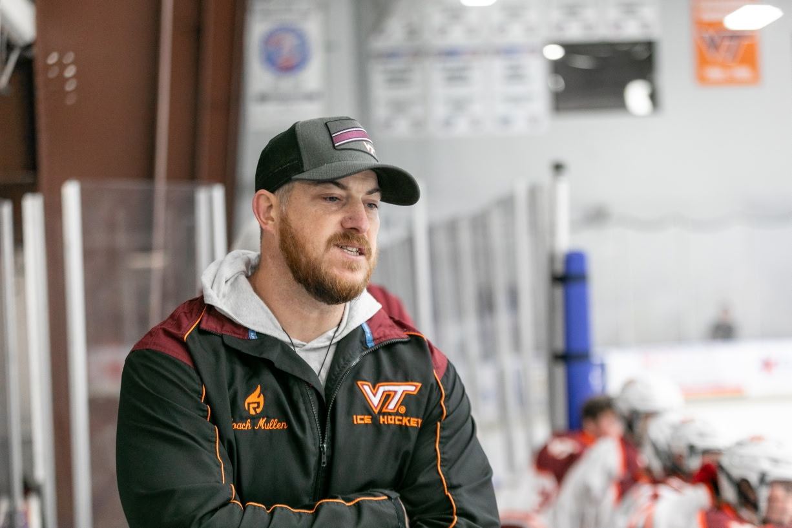

THE BENCH
MEET JOEY.
The leaders setting the standard for Hokies hockey.

HEAD COACH
Joey Mullen
Entering his 14th year at the helm, Joey Mullen has guided the Hokies through years of growth, regional success, and championship ambition.
← Back to coaches